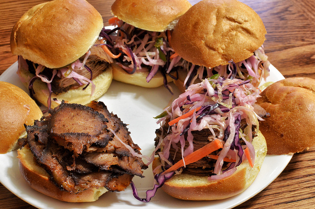

Everybody Likes Brisket
What is Brisket? and why is it so good?
Created by
Wayne Warner /
@wawjr3d
A delicious meat?

- jeffreyw
An isomorphic javascript framework
Why did we go isomorphic?
- Write one language
- One codebase
- More options (traditional or SPA)
- Media sites need SEO
What makes Brisket so good?
- Code freedom (seed framework)
- Feels like "just Backbone"
- Provides conveniences
- Provides tools to make your decisions
Key Concepts/Goals
- Optimize perceived speed
- The site works BEFORE javascript starts
- Feel like a library
What will my code look like?

How does Brisket actually work?
Basics
- Provides an express engine
- CommonJS code bundled for client
- jsdom on server side
- Base tag
- Client app start script
Routers return View (or Promise of a View)
A Router's job is to prepare a View to render into Layout
Delegate rendering management to Brisket
ChildView management
Brisket Views can have child views
Brisket child views can reattach themselves to existing DOM
Idempotent child view creation from server to client
Initial page load
Want an instant replay of server side route handling
- Sean MacEntee
Initial load state must be same as server for correct rendering
View reattachment
During server side render, Views get unique identifier
During client side render, Views gets the same unique identifier
Views search for themselves in the DOM
- Tambako The Jaguar
Bootstrapped Data
Server-side API responses are recorded and sent to client
Why should you use Brisket?
- You're building a media site
- You enjoy working in Backbone
- You're hungry
How can you consume Brisket?
Available on NPM
npm install brisket
Questions?
- Raymond Bryson
THE END
Barriga llena...corazon contento!!
- Joseph Bylund
BY Wayne Warner / @wawjr3d